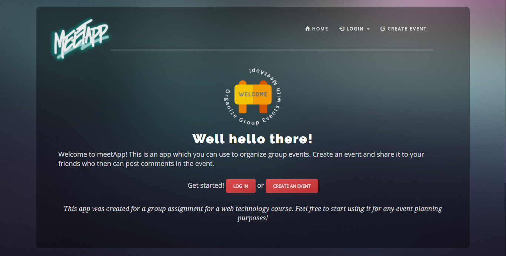
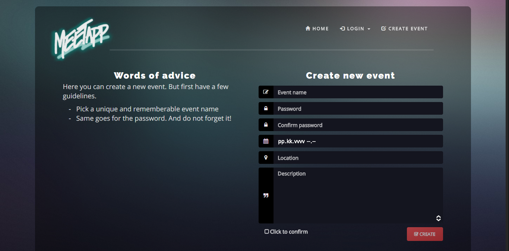

Description of our App meetApp is a cross platform Web application created to be hip, user friendly, and easily accessible. The app serves as a common place for individuals to connect to see events happening around them. Users can login by creating a username and password. Once this is complete users will be able to create an event that can be sent via to their friends via login and password, so that they can see the details and description such as the time, place, and location. Users can also communicate via a chat log if needed to ask questions or to get more information about the event itself.  meetApp is designed to be a convenience for people needing to organize an event with any number of attendees by being able to connect in one central location. With meetApp, user can also edit events already created in case there is a sudden change of details. meetApp truly gives users the power to free express their events and easily allows there invitees to see what is going on. We also give users simply instructions on what to do when creating an event. They are quite simple, because we truly want to give users the freedom express their event idea and be able to personalize it in whatever way they see fit. An example of this would be choosing a picture that represents the event that one would be hosting. The true functionally of meetApp is to connect people using technology to make our lives simply.  |
App Architecture Components of meetApp In short, all the components the application holds are: The core JS components (nodejs files such as app.js, models and config files) Front-end JS files (angularjs, its’ config, controllers and services) HTML-pages and their assets (CSS and JS scripts, images, fonts etc) MVC Pattern The files and the folder constructing the architecture of the whole application are defined by basic principles of the Model-View-Controller design. Code, files and folders are kept separately to keep a certain clarity as the development goes further. The whole project is easier to approach by someone new to the project as the source code is kept readable by applying the principles at issue. |
Technologies that We Used HTML5 Technology Web Sockets - In regards to web sockets, we choose to include it as a client chat in order for users to comment about the events that they are invited to. With the client chat, users are able to see comments about the event without refreshing their webpage. This functions helps keep our users updated. HTML5 API's New input types - One HTML5 API that we used is the new input types. We choose to incorporate the date input type and the time input type with our web app. This serves as allowing the user to show a date and time so that invitees can show up properly. Geolocation - Another HTML5 API we choose add to the web app was the Geolocation API. We decided that this would be a great API to have simply because users need to know a place that the event is happening at. AJAX The applications front-end communicates with the back-end API with AJAX-based request. For example, all the application’s most vital functions use http-requests with a JSON-objects as parameters. This goes along with using data request handling and queries from database. As mentioned above, the front-end and backend communicate via http-requests. The API processes the requests mostly by querying its database. With a combination of multiple modules (such as mongoose and passport) and their data request handling and database querying functions, the application constructs its very core. A Problem that Occurred One of the main problems we encountered was trying to implement our web socket chat box. We found a source code for web socket, and by using socket.io and node.js, the chat application worked well. But when we tried to implement the codes to our app, we tried to put the script separately and somehow it didn’t work. At the end, we used AngularJS Controller and it worked well. |
| Readme.txt |